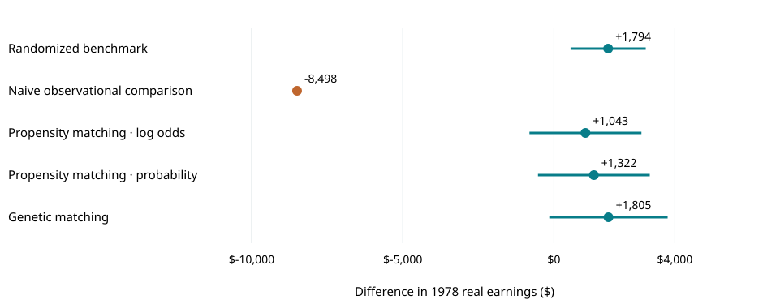
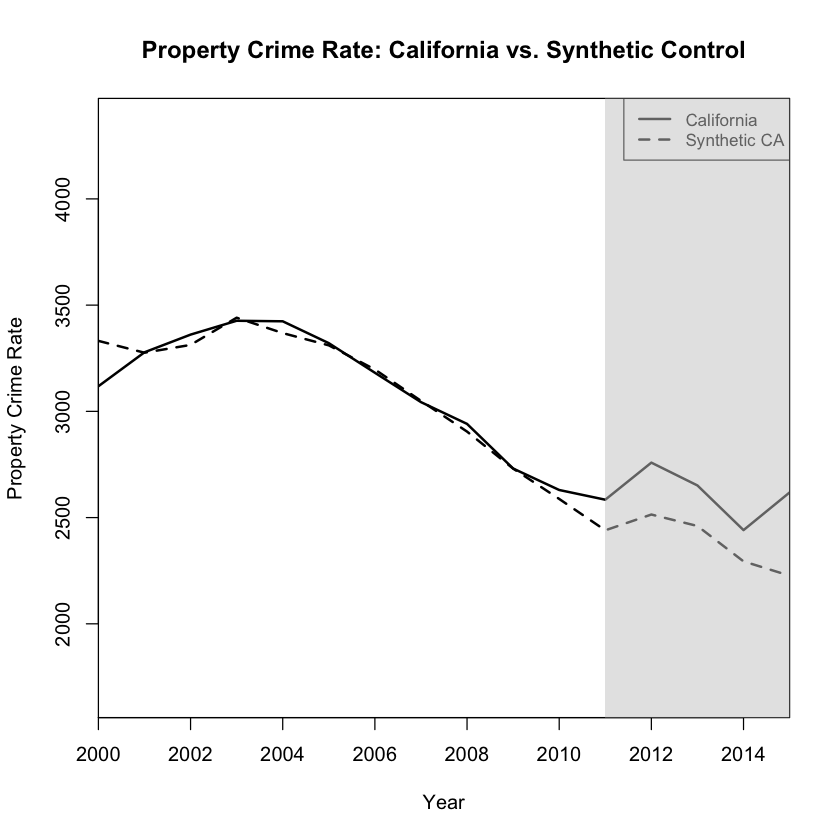
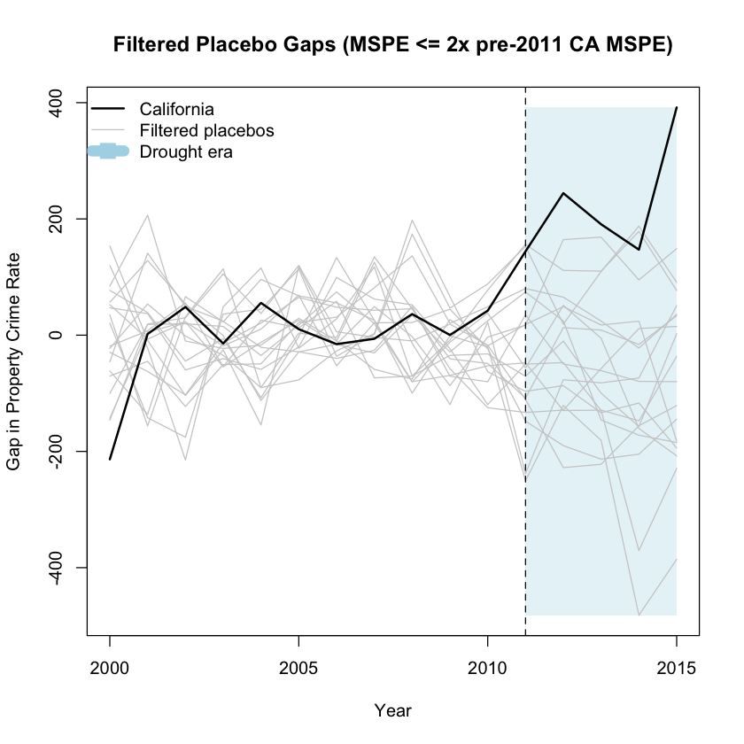

Can observational methods recover an experimental result?
Observational studies often lack a reliable benchmark: we can estimate an effect, but cannot directly check whether our method has removed confounding. The Lalonde job-training data provide an opportunity to make that comparison.
The randomized sample contains 185 participants who received training and 260 controls. The estimated difference in 1978 earnings is +$1,794, with a 95% confidence interval of $551–$3,038. This experimental estimate provides an estimate of the treatment effect against which to assess observational methods.
Constructing the observational comparison
I retained the same 185 trainees and replaced the randomized controls with 15,992 people from an observational comparison dataset. The unadjusted earnings difference was −$8,498.
The groups differed substantially before training. In 1974, trainees earned an average of $2,096, compared with $14,017 among the observational controls. Approximately 71% of trainees had no earnings that year, versus 12% of controls. An unadjusted comparison therefore mixes the program’s effect with pre-existing differences between the groups.
The question is whether matching can construct a more comparable control group and recover an estimate closer to the experimental benchmark.
Comparing matching methods against the benchmark

| Method | Estimated difference in 1978 earnings |
|---|---|
| Randomized experiment — benchmark | +$1,794 |
| Unadjusted observational comparison | −$8,498 |
| Propensity-score matching — log-odds scale | +$1,043 |
| Propensity-score matching — probability scale | +$1,322 |
| Genetic matching | +$1,805 |
Both propensity-score specifications moved the estimate toward the randomized benchmark, although the notebook’s balance diagnostics still detected differences in baseline characteristics.
Genetic matching improved measured balance and produced an estimate of +$1,805, close to the experimental estimate. However, its standard error was approximately $999, and its p-value of 0.071 did not meet a 5% significance threshold.
The result illustrates how accounting for observed differences can substantially change an observational estimate. In this application, genetic matching came closest to the experimental benchmark. That agreement is encouraging, but does not establish that it will perform best in other datasets or eliminate bias from unmeasured confounders.
California drought: constructing a counterfactual
For California’s 2011–2015 drought, there is no randomized control group. I used synthetic control: a weighted combination of other states chosen to approximate California before 2011, using crime histories and demographic and economic predictors.

California’s property-crime rate averaged 224 incidents per 100,000 above its synthetic comparison during 2011–2015. A visible gap is a starting point, not proof that drought caused it.
Would other states show a similar divergence?
I repeated the exercise with comparison states as placebo treatments, retaining 18 of 44 whose pre-period prediction error was no more than twice California’s. This avoids treating very poor pre-period fits as equally useful comparisons.

The notebook’s post-/pre-period prediction-error ratio comparison gives a rank-based value of approximately 0.158. That check provides less compelling evidence than the raw gap alone. Other events after 2011, donor-state suitability and missing predictor data limit attribution to drought.
Takeaway: A counterfactual should be judged by how well it fits before the event and how unusual its later divergence is—not just by whether two lines separate.
Explore the details
The full notebook also includes quantile comparisons, sensitivity analysis and an instrumental-variables exercise using job-training eligibility. The readable preview preserves the saved analysis, with code and lengthy output folded away.
Source: the original R course notebook and its saved outputs; this presentation does not rerun the models. Underlying sources and references are included in the full analysis. The overview corrects interpretation where the original prose overstates causal certainty.